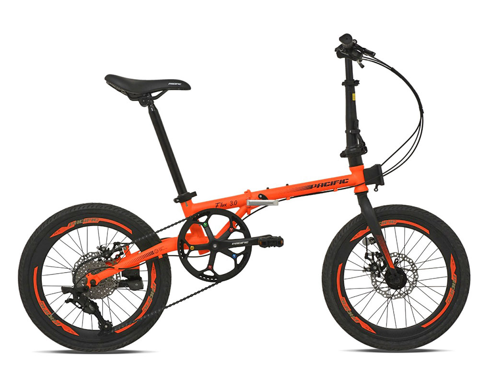
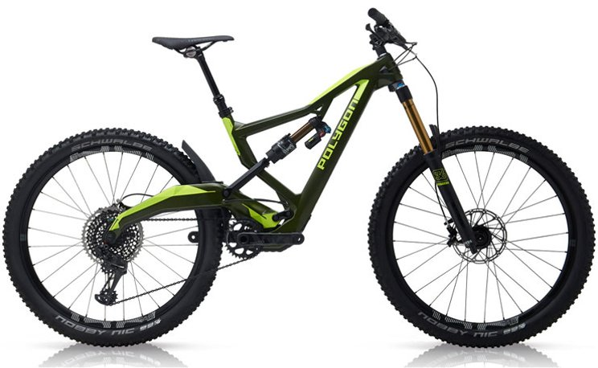
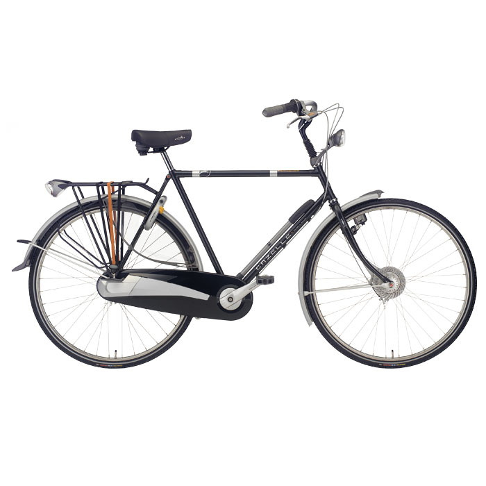
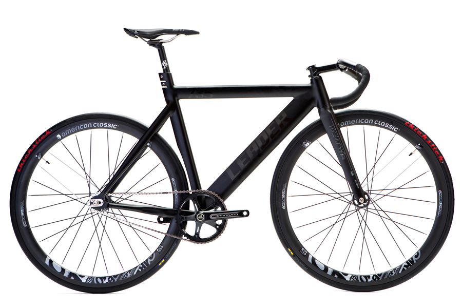
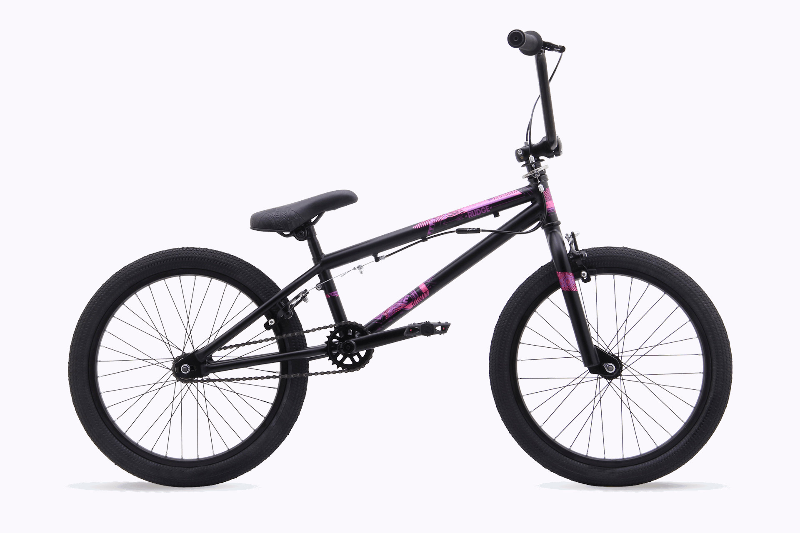
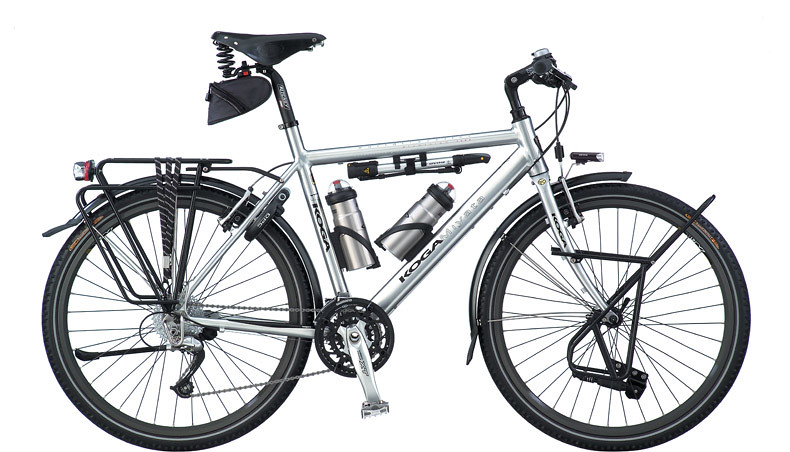
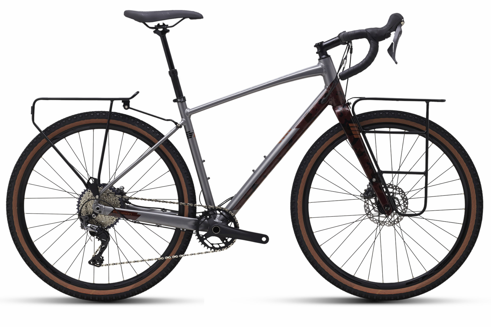
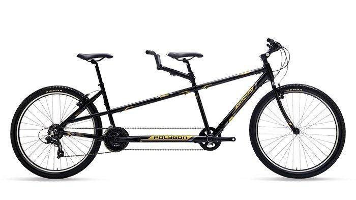
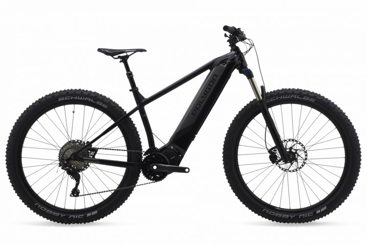

Sepeda Lipat

Karakteristik : compact, ringan dan fleksibel
Tipe pengguna : masyarakat kota dengan mobilitas tinggi
Tempat penggunaan : jalanan perkotaan
Sepeda Gunung

Karakteristik : struktur tangguh, dilengkapi fork bersuspensi
Tipe pengguna : pecinta aktivitas outdoor
Tempat penggunaan : hutan, pegunungan
Sepeda Balap

Karakteristik : struktur tangguh dan ringan, stang lengkung, fitur percepatan
Tipe pengguna : pecinta olahraga sepeda, penggunaan jarak jauh
Tempat penggunaan : jalan beraspal
Sepeda Onthel

Karakteristik : desain kuno, boncengan belakang, sepatbor khas
Tipe pengguna : kolektor sepeda kuno
Tempat penggunaan : jalanan datar dengan jarak pendek, properti tempat umum
Sepeda Fixie

Karakteristik : mekanisme fixed wheel, tanpa rem tangan
Tipe pengguna : masyarakat kota untuk penggunaan casual
Tempat penggunaan : jalanan datar beraspal
Sepeda BMX

Karakteristik : stang tinggi, jok rendah, roda kecil dengan ban tebal
Tipe pengguna : anak muda untuk penggunaan freestyle
Tempat penggunaan : tempat umum di perkotaan
Sepeda Touring

Karakteristik : fitur mirip road bike, dibekali tambahan perlengkapan
Tipe pengguna : hobi bersepeda jarak jauh
Tempat penggunaan : jalanan beraspal
Sepeda Hybrid

Karakteristik : perpaduan sepeda balap dan MTB
Tipe pengguna : hobi bersepeda jarak jauh sekaligus off-road
Tempat penggunaan : jalanan beraspal dan off-road
Sepeda Tandem

Karakteristik : jok rendah, ban kecil, bodi panjang
Tipe pengguna : penggunaan keluarga
Tempat penggunaan : jalanan datar
Sepeda Listrik

Karakteristik : jenis dan bentuk bermacam-macam, penggerak bertenaga listrik
Tipe pengguna : masyarakat perkotaan
Tempat penggunaan : jalanan datar dengan jarak tempuh menengah